Visualising MRC Projection Results
Source:vignettes/visualising-projections.Rmd
visualising-projections.RmdThis vignette explains how to save and interpret MRC projection plots using the two exported plotting workflows. For how to create and run a projection, see Conducting an MRC Projection. For CSV export, see Exporting Projection Results.
All example images below were generated from a full 11-step,
201-country projection for the United States (ISO 840)
with post_switch = TRUE,
light_migration = TRUE,
light_switching = TRUE, switching_type = 1,
and no_diff = FALSE. A second projection with
no_diff = TRUE is used for the comparative section. PNG
files are embedded directly so the vignette renders instantly.
1 Country-level plots — save_plots_all()
save_plots_all() generates every applicable plot variant
for every country and saves them as PDF files (one per country, or a
single combined file).
library(measuringreligiouschange)
save_plots_all(
obj_normal,
# ── Output location ────────────────────────────────────────────────────
folder = "output/normal", # directory to write into; created if absent.
# Defaults to the projection's name.
single_file = FALSE, # FALSE → one PDF per country; TRUE → one combined PDF.
order_by_name = FALSE, # FALSE → order by ISO code; TRUE → alphabetical.
# ── Content switches ───────────────────────────────────────────────────
demographic_plots = TRUE, # variants 1, 2, 3, 4, 5, 6, 7, 8, 14 — see below.
switching_plots = TRUE, # variants 12 and 13.
# Omit to inherit from the projection's setting.
migration_plots = TRUE, # variants 9, 10, and 11.
# Omit to inherit from the projection's setting.
# ── Post-switch display ────────────────────────────────────────────────
show_post_switch = TRUE, # TRUE → show original and post-switch populations
# separately; FALSE → merge them into one series.
# ── Colour palettes ────────────────────────────────────────────────────
plot_colors = c( # one colour per base religion (7 required)
"blue3", "green4", "red3", "yellow3", "orange3", "purple3", "grey40"
),
plot_switching_colors = c( # one colour per base + post-switch religion (14)
"blue3", "green4", "red3", "yellow3", "orange3", "purple3", "grey40",
"darkblue", "darkgreen", "red4", "yellow4", "orange4", "purple4", "grey30"
),
progress_bar = FALSE
)Plot variants by flag
The three content switches control which variant groups are produced:
demographic_plots = TRUE
| Variant | Indicator | Notes |
|---|---|---|
| 14 | Population summary table | Shares by religion and period |
| 1 | Total population | All religions combined |
| 2 | Population by religion | One panel per religion |
| 3 | Stacked population structure | Religious shares over time |
| 4 | Population pyramid | Saved at three periods: first, middle, last |
| 5 | Total fertility rate (TFR) | By religion |
| 6 | Age-specific fertility rates | Saved at three periods |
| 7 | Births | By religion |
| 8 | Deaths | By religion |
migration_plots = TRUE
| Variant | Indicator |
|---|---|
| 9 | In- and out-migration over time |
| 10 | Emigrant composition by religion |
| 11 | Immigrant composition by religion |
switching_plots = TRUE
| Variant | Indicator | Notes |
|---|---|---|
| 12 | Religious retention by sex | |
| 13 | Religious retention over time | One panel per religion |
Example output — USA (code 840)
Variant 14 — Population summary table
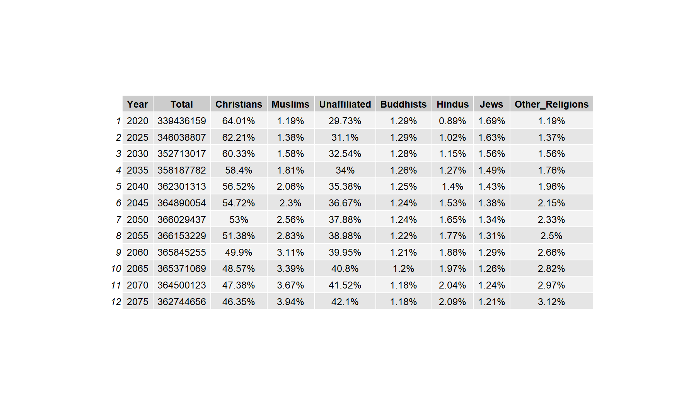
Variant 14: Population share summary table for the USA across all projection periods.
Variant 1 — Total population
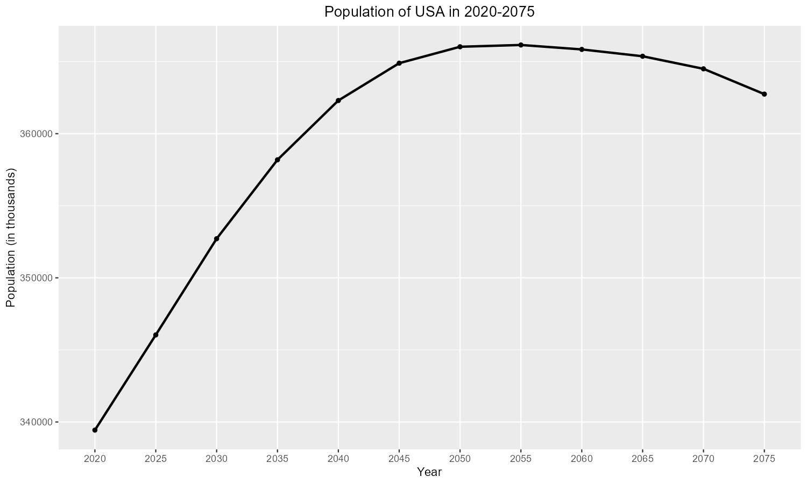
Variant 1: Total projected population of the USA (2020–2075).
Variant 2 — Population by religion (Christians)
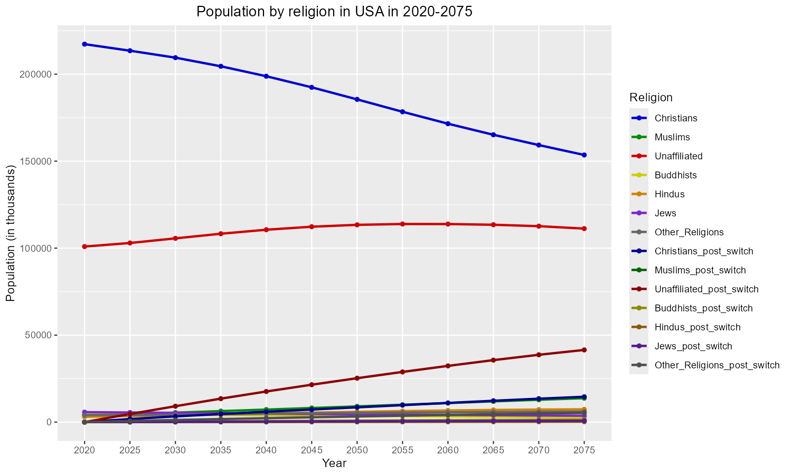
Variant 2: USA population — Christians.
Variant 3 — Population structure
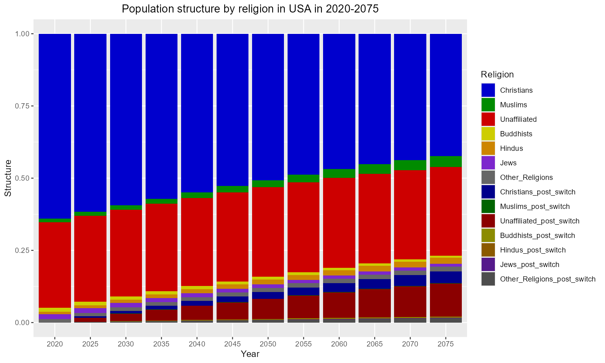
Variant 3: Stacked population structure of the USA.
Variant 4 — Population pyramid (period 6 ≈ 2050)
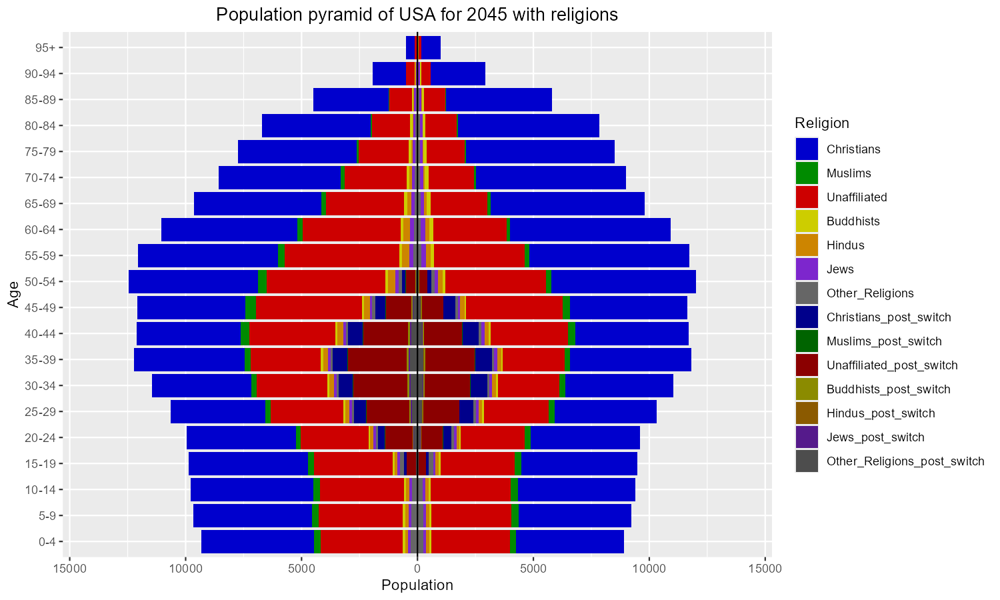
Variant 4: Population pyramid of the USA at 2050.
Variant 5 — Total fertility rate
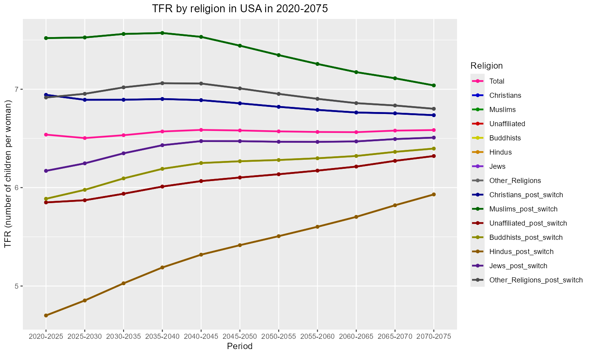
Variant 5: TFR of the USA by religious group.
Variant 6 — ASFR (period 1, 2020–2025)
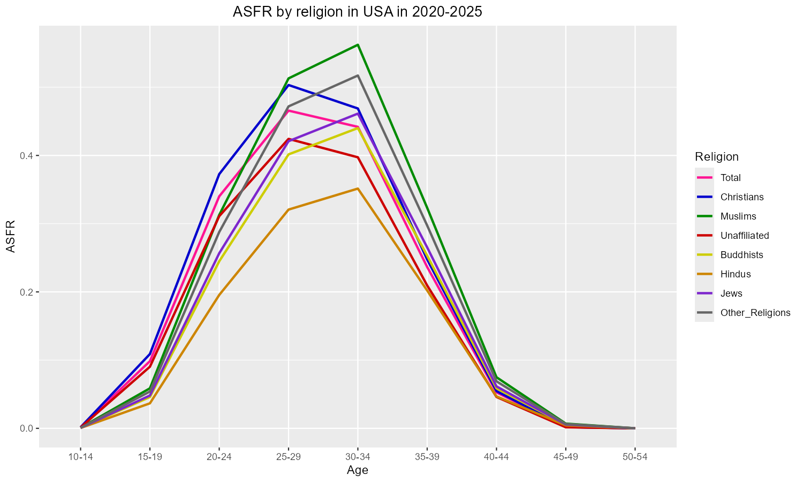
Variant 6: ASFR of the USA in 2020–2025.
Variant 7 — Births
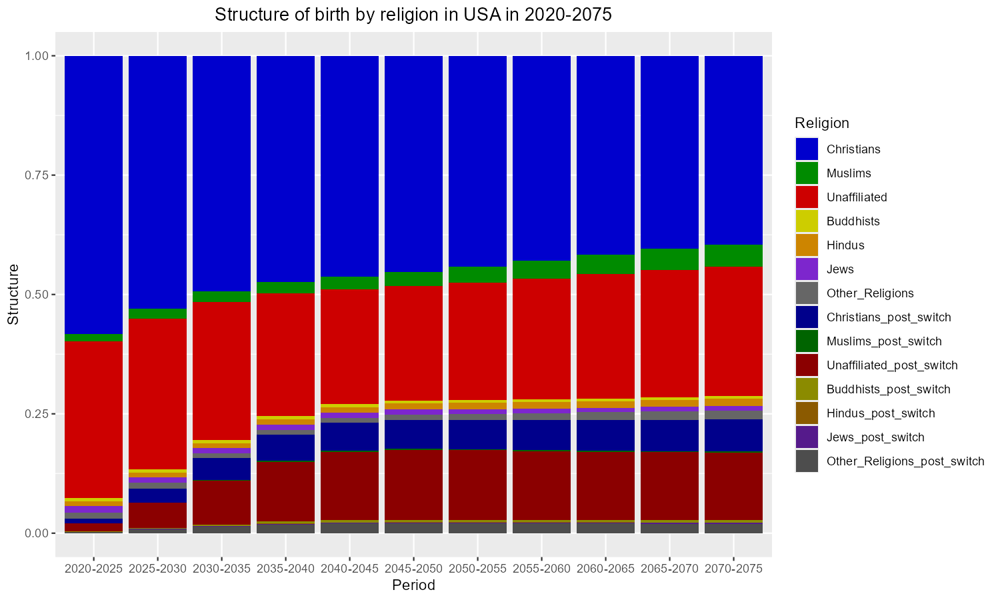
Variant 7: Projected births in the USA by religion.
Variant 8 — Deaths
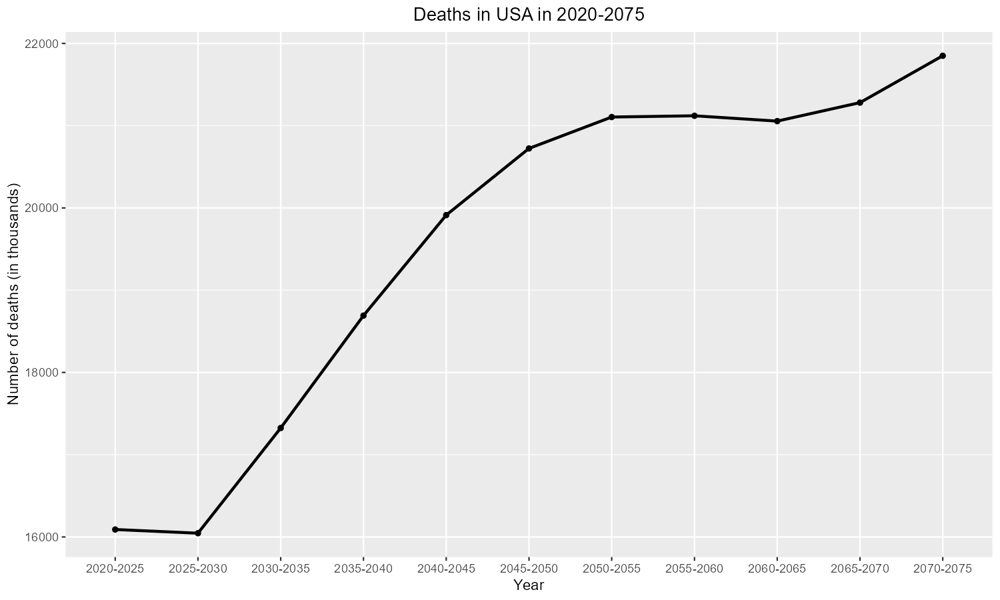
Variant 8: Projected deaths in the USA by religion.
Variant 9 — Migration
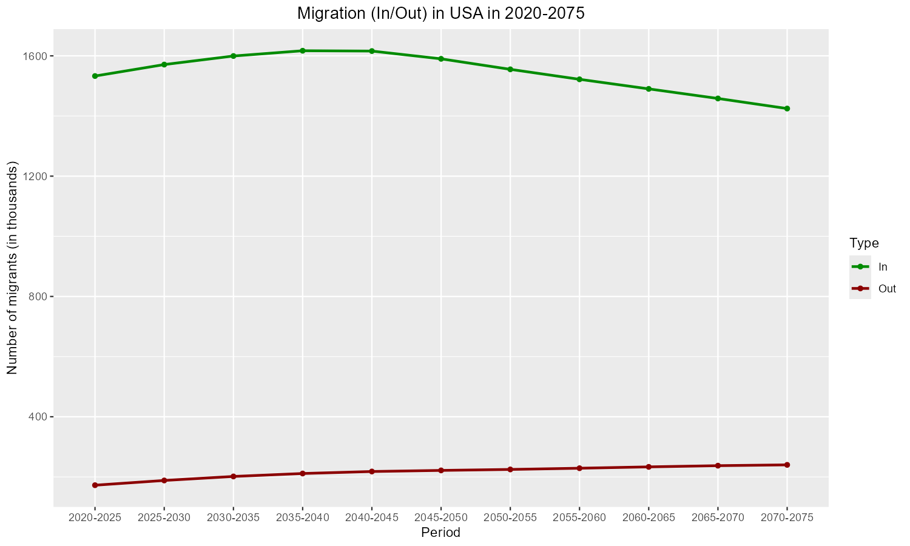
Variant 9: In- and out-migration flows for the USA.
Variant 10 — Emigrant composition
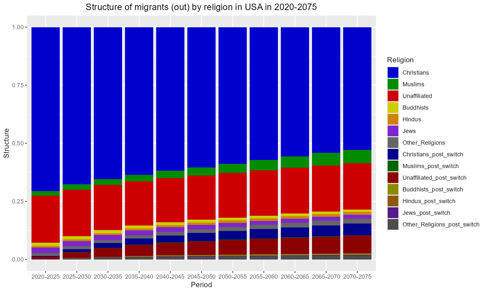
Variant 10: Religious composition of emigrants from the USA.
Variant 11 — Immigrant composition
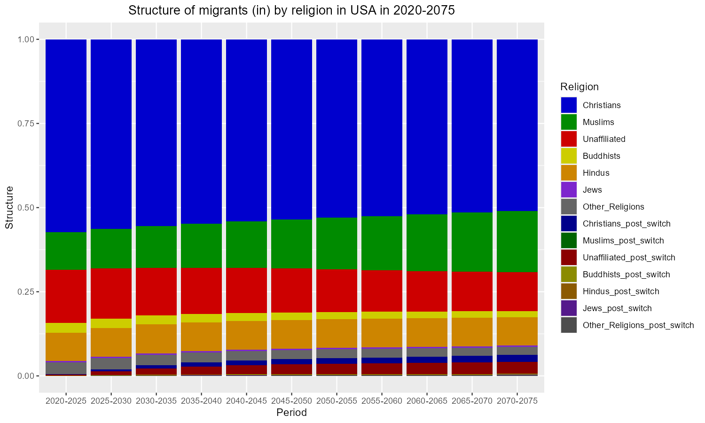
Variant 11: Religious composition of immigrants to the USA.
Variant 12 — Retention by sex (post-switch populations merged)
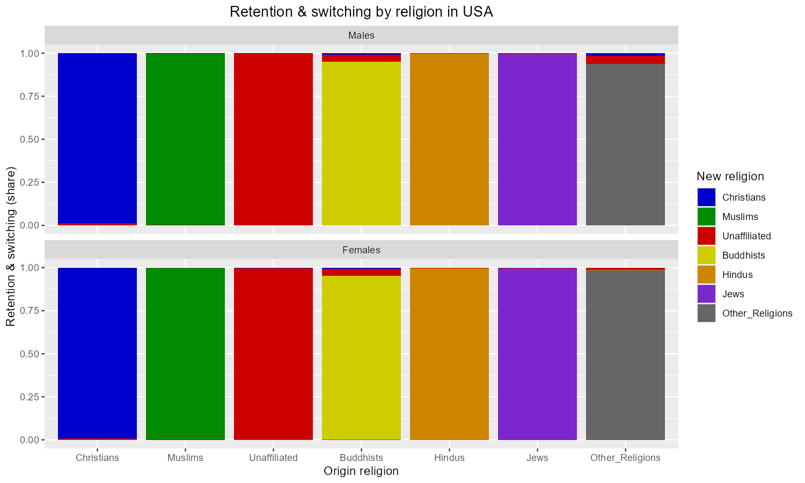
Variant 12: Religious retention and switching by sex in the USA.
Variant 13 — Retention over time (Christians)
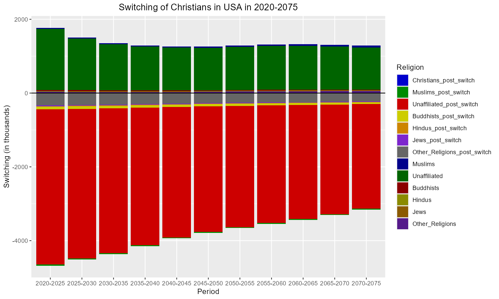
Variant 13: Religious retention over time in the USA — Christians.
2 Region-level plots — save_plots_regions_all()
save_plots_regions_all() accepts the same arguments as
save_plots_all() and generates the same variant groups
aggregated to world regions. It requires save_totals = TRUE
in project().
save_plots_regions_all(
obj_normal,
folder = "output/normal_regions",
single_file = FALSE,
show_post_switch = TRUE,
demographic_plots = TRUE, # variants 1–8 and 14 aggregated to regions
switching_plots = TRUE, # variants 12–13
migration_plots = TRUE, # variants 9–11
plot_colors = c("blue3", "green4", "red3", "yellow3", "orange3", "purple3", "grey40"),
plot_switching_colors = c(
"blue3", "green4", "red3", "yellow3", "orange3", "purple3", "grey40",
"darkblue", "darkgreen", "red4", "yellow4", "orange4", "purple4", "grey30"
),
progress_bar = FALSE
)3 Comparative plots — plot_comparative() and
save_plots_comparative_all()
Comparative functions overlay two or more projection objects on the same axes.
plot_comparative() — single plot, returned as a ggplot
object
p <- plot_comparative(
projection_objects = list(obj_normal, obj_nodiff),
# List of resolved projection objects.
# Legend labels come from each object's projection name.
country = 186L, # Integer index into country_object_list.
type = 1L, # Comparative plot type (1–10); see table below.
religion = 1L, # Religion index used by type-specific plots
# (types 2, 3, 10). Ignored by types that aggregate
# all religions (types 1, 4, 5, 6, 7, 8, 9).
plot_colors = c( # 14-element palette: 7 base religions + 7 post-switch.
"blue3", "green4", "red3", "yellow3", "orange3", "purple3", "grey40",
"darkblue", "darkgreen", "red4", "yellow4", "orange4", "purple4", "grey30"
)
)
# ggsave("comparison.png", p, width = 10, height = 6, dpi = 150)
save_plots_comparative_all() — saves all types for
every country
save_plots_comparative_all(
projection_objects = list(obj_normal, obj_nodiff),
# List of two or more resolved projection objects.
folder = "output/comparative",
# Output directory; created if absent.
single_file = FALSE, # FALSE → one PDF per country; TRUE → combined PDF.
demographic_plots = TRUE, # comparative types 1, 2, 3, 4, 5, 6
migration_plots = TRUE, # comparative types 7, 8, 9
switching_plots = TRUE, # comparative type 10
# Omit each to inherit from the first object.
plot_colors = c(
"blue3", "green4", "red3", "yellow3", "orange3", "purple3", "grey40",
"darkblue", "darkgreen", "red4", "yellow4", "orange4", "purple4", "grey30"
),
progress_bar = FALSE
)Comparative plot types by flag
demographic_plots = TRUE
| Type | Indicator | Notes |
|---|---|---|
| 1 | Total population | All religions combined |
| 2 | Population by religion | One panel per religion |
| 3 | Population structure | One panel per religion |
| 4 | Population pyramid | |
| 5 | Total fertility rate | |
| 6 | Age-specific fertility rates |
migration_plots = TRUE
| Type | Indicator |
|---|---|
| 7 | Births by religion |
| 8 | Emigration |
| 9 | Immigration |
switching_plots = TRUE
| Type | Indicator | Notes |
|---|---|---|
| 10 | Switching flows | One panel per religion |
Example output — USA, normal vs no-differential fertility
Type 1 — Total population
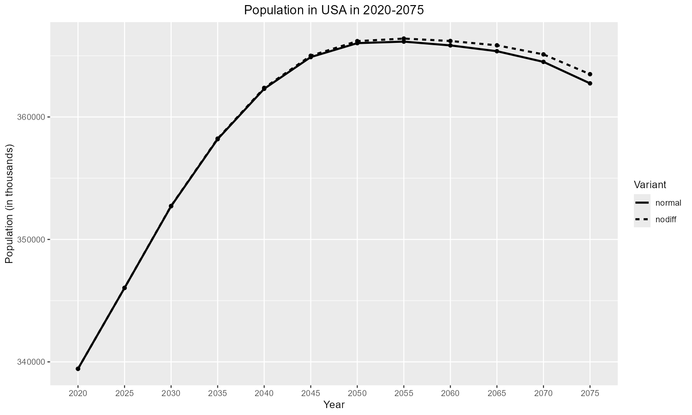
Comparative type 1: Total population — normal vs no-diff (USA).
Type 2 — Population by religion (Christians)
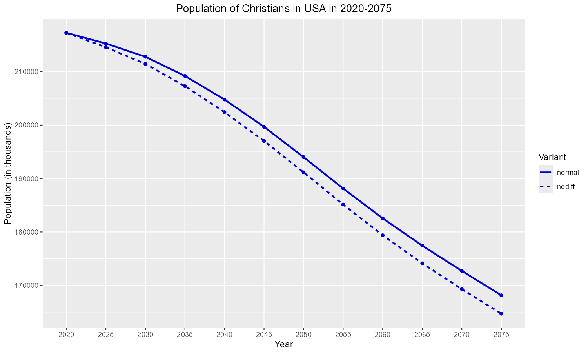
Comparative type 2: Population — normal vs no-diff (USA, Christians).
Type 4 — Population pyramid
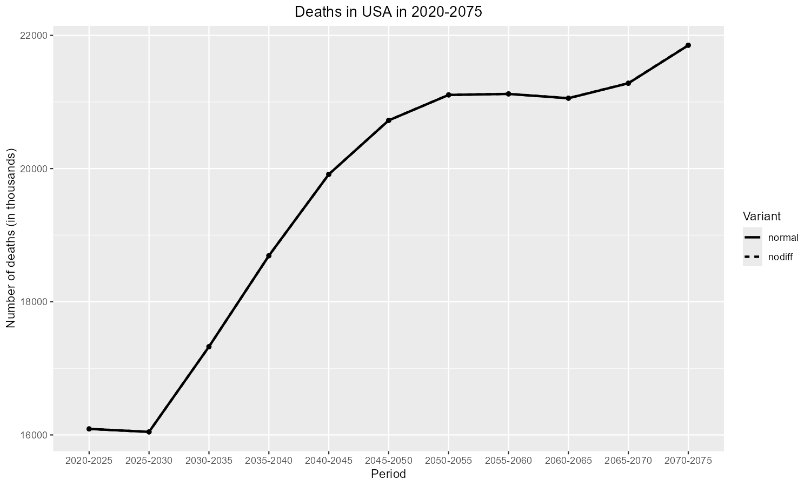
Comparative type 4: Population pyramid — normal vs no-diff (USA).
Type 5 — TFR
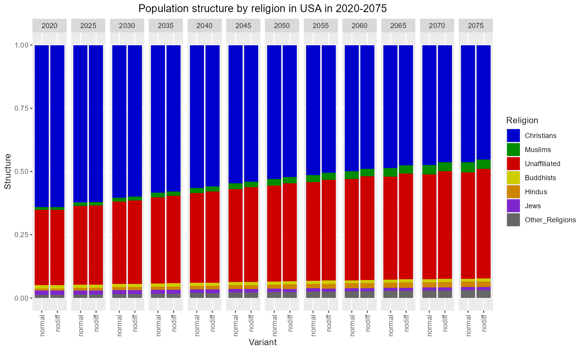
Comparative type 5: TFR — normal vs no-diff (USA).
Type 7 — Births
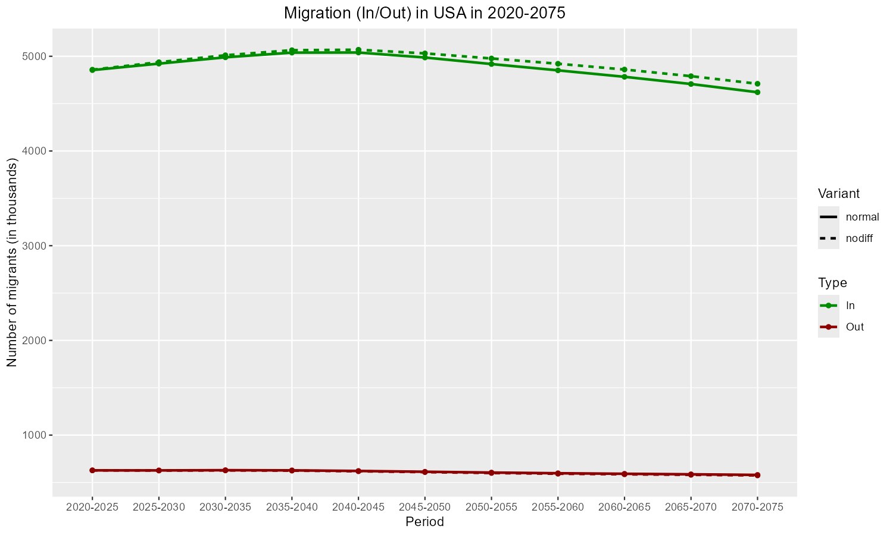
Comparative type 7: Births — normal vs no-diff (USA).
Type 8 — Emigration
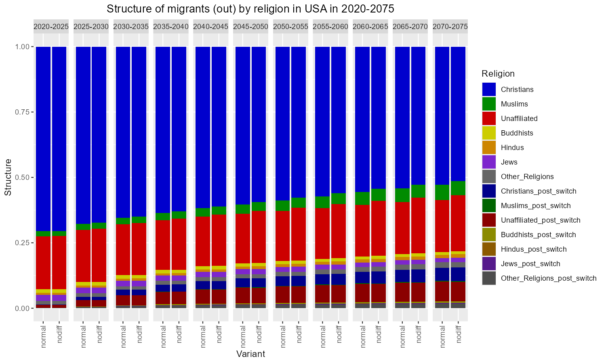
Comparative type 8: Emigration — normal vs no-diff (USA).
Type 9 — Immigration
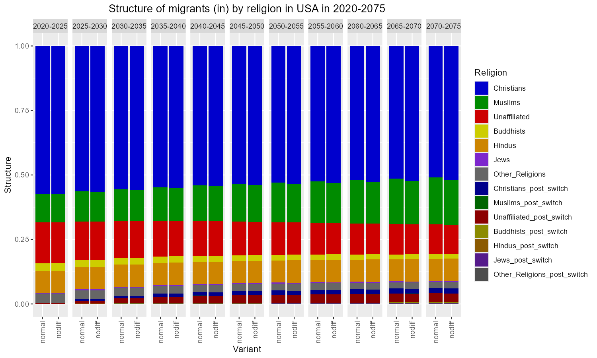
Comparative type 9: Immigration — normal vs no-diff (USA).
Type 10 — Switching flows (Christians)
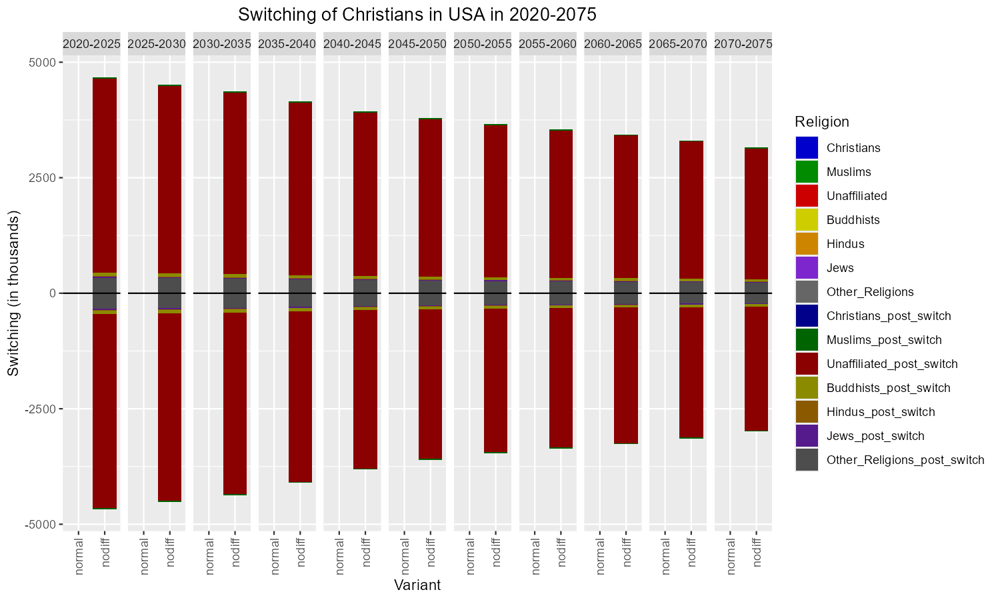
Comparative type 10: Switching flows — normal vs no-diff (USA, Christians).